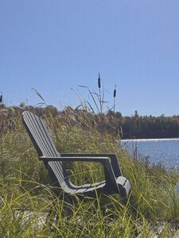
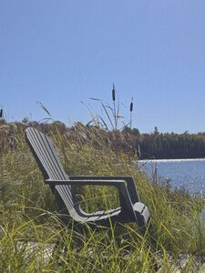

about
i am programmer that's deeply passionate about it's craft. i can't stop studying and learning different corners of this field while spiraling upwards towards mastery
i don't fanboy any tool or language, simply appreciate the diversity and each's strengths and weaknesses. i like surmounting the insurmountable and doing it quickly and intensly
i don't specialize in just one area because what is most satisfying to me is a working product from the perspective of the user, and that means handling everything from ideation, prototype, contracts, api, validation, user interface, deployment and iteration
contact
telegram: @kiasaki
twitter: @kiasaki0
github: /kiasaki
email: kiasaki0000@gmail.com
projects
- dotfiles mainly vim and tmux configuration
- ed 9001th text editor, now my daily
- agent simplistic coding agent I use at times
- term x11 terminal, minimal deps, daily
- wm my x11 window manager, floating, see bar.c
- dm my x11 display manager, autologin
- evry notes, e2e encrypted, offline first, sync
- webterm terminal over http
- tunel tunel ports from homelab to bastion vm
more
i've always seems people (often from the "second brain" crowd) with impresive personal websites sprawling with information and links.
the rest of this page is my attempt to head in that direction while keeping things simple and minimal. but really it's mostly for myself, be happy if you find a tidbit that's useful to you.
archives — gallery — blogroll — books — backpack — knowledgearchives
disclaimer: those are very old posts from a more youthful me, they are still here for posterity
- 2017 may agile: ideal vs reality
- 2016 sep on motivation
- 2016 may text editor implementation as a programming étude
- 2015 nov bringing sanity to nodejs
- 2015 sep 4 resons for slowing down
- 2015 aug building a saas business is 20% code 80%...
- 2015 mar constantly improving
- 2014 oct boring tech is the best tech
- 2014 apr equality of languages
gallery
 

blogroll
books
next
- thinking in systems: donella h. meadows
- ikigai: hector garcia
- the nvidia way: tae kim
- a small matter of programming: bonnie nardi
- the peripheral: william gibson
- neuromancer: william gibson
- ai engineering: chip huyen
- proof of stake: vitalik buterin
- the power of now: eckhart tolle
- mere chistianity: c.s. lewis
2026
- high noon: karen southwick
- the four agreements: don miguel ruiz
- technology, java and pizza: scott mcnealy
2025
- the abolition of man: c.s. lewis
- purpose and profit: dan koe
- vibe coding: gene kim & steve yegge
- effective c: robert c. seacord
- captured: christopher wylie
- ai 2041: kai-fu lee & chen qiufan
- the coming wave: mustafa suleyman
- co-intelligence: ethan mollick
- the almanack of naval ravikant: eric jorgenson
- sahil bloom: the 5 types of wealth
- simplicity parenting: kim john payne & lisa m. ross
2024
- last child in the woods: richard louv
- quoz: mel mattison
- red team blues: cory doctorow
- all systems red: martha wells
- the psycology of money: morgan housel
- inside the black box: rishi k. narang
- best loser win: tim hougaard
- a world without email: cal newport
2023
- die with zero: bill perkins
- the new market wizards: jack d.schwager
- the pathless path: paul millerd
- the anarchist handbook: michael malice
- hypermedia systems: adam stepinski & carson gross & deniz aksimsek
2022
- the infinite game: simon sinek
- discipline is destiny: ryan holiday
- siddhartha: hermann hesse
- foundation: isaac asimov
- the bitcoin standard: saifedean ammous
- the sovereign individual: james dale davidson & william rees-mogg
- the future is faster than you think: peter h. diamandis & steven kotler
2021
- ansi common lisp: paul graham
- lisp hackers: vsevolod domkin
- life profitability: adii pienaar
- the zurich axioms: max gunther
- money: jacob goldstein
2020
- the e-myth revisited: michael e. gerber
- culture and empire: pieter hintjens
- early retirement extreme: jacob lund fisker
- 4 hour body: timothy ferriss
- hell yeah or no: derek sievers
- ego is the enemy: ryan holiday
- minimal mac: patrick rhone
- focus: leo babauta
- lost and founder: rand fishkin
- a philosophy of software design: john ousterhout
2019
- marketing: a love story: bernadette jiwa
- thinking forth: leo brodie
- company of one: paul jarvis
2018
- developer hegemony: erik dietrich
- it doesn't have to be crazy at work: jason fried & david heinemeier hansson
- masters of doom: david kushner
- trend following: michael w. covel
- understanding software: max kanat-alexander
- the problem of hft: haim bodek
- way of the turtle: curtis faith
- the little book of trading: michael covel
- linchpin: seth godin
- a man for all markets: edward o. thorp
- fooled by randomness: nassim nicholas taleb
- principles: ray dalio
2017
- blink: malcolm gladwell
- the developer's code: ka wai cheung
- the subtle art of not giving a fuck: mark manson
- extreme ownership: jocko willink & leif babin
- originals: adam grant
- wealth can't wait: david osborn & paul morris
- barking up the wrong tree: eric barker
- the millionaire fastlane: mj demarco
- quiet: susan cain
- the art of trend trading: michael parness
- beating the street peter lynch
- so good they can't ignore you: cal newport
- stock market wizards: jack d.schwager
- the new trading for a living: alexander elder
- stumbling on happiness: daniel gilbert
- a guide to the good life: william braxton irvine
- china china's mobile economy: winston ma
- elon musk: ashlee vance
- deep work: cal newport
- outliers: malcolm gladwell
- the richest man in babylon: george s. clason
- hackers: steven levy
- the hitchhikers guide to the galaxy: douglas adams
- how google works: eric schmidt
- rest: alex soojung-kim pang
- antifragile: nassim nicholas taleb
- the little schemer: daniel p. friedman & matthias felleisen
- effective python: brett slatkin
- coders at work: peter seibel
- execute: drew wilson & josh long
2016
- the ultimate freelancer's guidebook: yuwanda black
- drive: daniel h. pink
- code for cash: zack burt
- the c programming language: brian w. kernighan & denis m. ritchie
- the war of art: steven pressfield
- ultralight: leo babauta
- the hard thing about hard things: ben horowitz
- good to great: jim collins
- data driven: dj patil & hilary mason
- playing to win: lafley martin
- slack: tom demarco
- javascript: the good parts: douglas crockford
- code simplicity: max kanat-alexander
- software, faster: dan north
- realm of racket: matthias felleisen
- clojure for the brave and true: daniel higginbotham
- the mythical man month: frederick p. brooks, jr.
- how to stop sucking: jeff atwood
2015
- clean code: robert c. martin
- effective programming: jeff atwood
- give and take: adam grant
- how to fail at almost everything and still win big: scott adams
- the upgrade: paul carr
- 7 day startup: dan norris
- packing light: fred perrotta
- learn you a haskell for great good!: miran lipovaca
- essential: joshua fields millburn & ryan nicodemus
- the end of jobs: taylor pearson
- the year without pants: scott berkun
- i will teach you to be rich: ramit sethi
- life changes quick: johnny fd
- the bulletproof diet: dave asprey
- the art of non-conformity: chris guillebeau
- money: master the game: tony robbins
- hackers & painters: paul graham
- the power of habit: charles duhigg
- the one thing: gary keller & jay papasan
2014 and before
- essentialism: greg mckeown
- zero to one: peter thiel
- the lean startup: eric ries
- the pragmatic programmer: andrew hunt & david thomas
- without their permission: alexis ohanian
- things a little bird told me: biz stone
- the 4-hour workweek: timothy ferriss
- the phoenix project: gene kim, kevin behr & george spafford
- talent is overrated: geoff colvin
- rework: jason fried & david heinemeier hansson
- remote: jason fried & david heinemeier hansson
- starting and sustaining: garret dimon
- scrum and xp from the trenches: henrik kniberg
smaller reads
- going pro: cal evans
- deal with it: gavin davies
- getting real: 37 signals
- the roller coaster life: chloe nicholls
- the little book of contentment: leo babauta
- owsap top 10: the open web application security project
- build apis you won't hate: phil sturgeon
- scaling php applications: steve corona
- a byte of vim: swaroop c h
- the motivation hacker: nick winter
backpack
i happen to love bags, at this point we could say i have a "collection" of them. initally it was born out of the "one bag" community and the idea of travelling light. over time simply liked the idea of having all i need with me, prepardness while being intentional about the selected few items you lug around all day. this grew to a point where i thought myself how to sew and a lot about materials and techniques. learned a lot from the backpacking community. below is a list of what i usually carry on the daily.
messenger (homemade trakke wee lug)
- laptop (framework 13)
- laptop sleve (homemade)
- notebook
- shopping bag (grocery shape tyvek)
- watch (seiko sbxy029)
- keys (held by key smart pocket clip)
- cards (held by nite ize)
- sling (see below)
- toiletries (see below)
sling (homemade trakke zero waste)
- handkerchief
- knife (benchmade bugout)
- flashlight (olight i3t)
- pen (lamy)
- lip balm (blistex)
- lighter (mini bix)
- sunglasses
- small notepad
- headphones (wired) + airpods
- charger (65w 2x usbc)
- various adapters
- usb key
toiletries (homemade zip pouch)
- deodorant
- toothbrush + paste
- comb (from hotel)
- razor
- tweezers + nail clipper (tweezerman)
- medicine (tyenol, tums, etc)
- sunscreen
- perfume
- tide to go
i also have an emergency ("get home") bag. a tool bag in my car trunk. a travel packing list. and a backpacking list.
knowledge
edc
means "every-day-carry", hobby realted to obsessing over what you carry with you everyday with the goal of prepardness in mind. prefers when things are actaully with you when you need it so if you don't always have a bag on you, it means preferably you'll have some of those items in your pockets. the core items people often include are: knife (for opening amazon boxes, duh), flash light (because, no, you phone one is not enough), watch, pen & paper, wallet, key organizer. your bag is meant to be a cavity for smaller bags and pouches that keep things organized, this also makes it easier to move things from one bag to an other.
journaling
daily prompts: what excited me? what drained me? what did I learn?
bullet journaling: each line has a special prefix defining the tasks's status/type, free form thoughts under list, carry over not done items to next day. - task. + done. * note. = mood. O event. > moved;
vomit journaling. V: vent (explore problems, thoughts). O: obligations (organize priorities). M: mindset (perspective, possibility, gratitude). I: ideate (solutions to problems). T: trajectory (dierction > evidence > actionables)
philosophy
stoic advice: be self-aware (reflect on actions), use reasoning to overcome emotions and master desires (fame, fortune, pleasures get in the way of tranquility), if wealthy enjoy it but don't cling to it, we are social creatures that are miserable when cut off from people (but don't have people with corrupt values around because they will contaminate you), other people will always be annoying if you let tehem (don't get angered by insults, laugh it out, self deprecate), 2 sources of unhapinnes (unstability and worrying about things out of our control), to get over instability do negative visualization contemplate loss and inpermanance (also practice poverty, even shortly), to get over worry about things beyond our control triage in 3 buckets (can control: handle easily, no control: forget, move on, some control: most time is spent here), with things you do not have full control over: internalize your goal (do not win this tenis match, play the best match possible), be fatalistic about the external world: past is out of our control, learn from it and shape the future.
photography
why: for expression. of memory, evidence, art, commerce
modes: manual (control everything), aperture priority (when you want to control focus), shutter priority (when you want to capture fast action or action over long time). action: low shutter, landscape: low aperture, portrait: high aperture
lenses: zoom (>50mm), standard (35-50mm), wide angle (<35)
composition: simplicity, rule of thirds, lines, balance, framing, avoid mergers
composition2: clear subject, many takes, vertical vs horizontal, position subject in picture, position subject in space, concious of horizon line, vary angles (up, down, etc), use background, indicate scale, be creative, break rules
genres: portrait, landscape, documentary, still
editing: crop un-necessary, contrast (dynamic), balance (fix indoor), saturation (black and white is timeless)
motion: stop (highest shutter speed), blur (slow shutter with tripod), panning (follow subject with camera, blurs background), timelapse (blurs motion)
startups
focus on: know your customer, think outside the box, follow market, pivot fast, execute fast, focus on revenue, know runway, work with people you enjoy
8 core areas: leadership (create culture), finance (ensure sustainability), operations (minimize risk), growth (optimize), product (produce predictable value), service (maximize satisfaction), sales (generate revenue), marketing (identify, understand and generate demand)
documentation types: getting started, best practices, how to, faq, troubleshooting (name based on job to be done, not feature)
interviewing candidate: look for warnings, intro (get to know), relax (where from), test/task (likes, feelings, thought process), how we work / role, questions
monitoring
red: rate (req/s), error (http status breakdown), duration (req ms), saturation (cpu usage), health (read/write ok)
types: metrics (what), logs (why), traces (where). but if you have a great db like scuba, powerdrill, honeycomb, druid then you only need traces and derive the rest, add field based sampling for scalability
if storing metrics in a home grown way, you will typically agregate in a time bucket, but to keep all the details / flexibility, do not only record last value in the time range, increment count, raise max if needed, lower min if needed, and update avg (newavg = (oldavg * count + value) / (count+1))
traces entries are traditionally composed of: id, timestamp, duration, parentId, traceId, name, type (service name), tags (kvp), span (client, server, producer, etc)
the idea really isn't to add those retroactively to debug once you encounted an issue. it's to put this in place by default in every service and include adding tracing as part of developing any feature. they will help you understand anything that is going on in production at any moment in time in the future. a bit like having a debugger always attached. this especially useful because issues are often caused by corner cases that happen rarely and simply trying to reason from the outside with just a stack trace can make the job much harder and lengthier than it has to be.
i kind of fangirl on the columnar data stores foks like honeycomb and facebook wrote for themselves, collect the papers and talks
lisp
Lisp cycles XKCD #297: "Those are your father’s parentheses. Elegant weapons for a more… civilized age." but really lisp was early to a lot of what made it's way into modern languages over the years, and still has things that most languages will never achive like code as data because... parenthesis.
primitives: atom, eq, car, cdr, cons, quote, cond, lambda, label, apply
more (scheme): define set! let begin pair? list? null? eq? eqv? cond case and or map for-each + - * / = < <= append assoc assq assv list include length min max gcd modulo member memq memv not reverse unless quasiquote unquote unquote-splicing when error raise guard
forth
interesting because dead simple to implement, very close to the machine, but surprisingly capable (even pleasant) in the hands of somebody that is familiar. because it has this meta programming at it's core, it can bootstrap most of it's user space from just a few primitives, see 1992 IOCCC first & third. book recomendation: thinking forth
stack: push pop dup drop swap over nop rot
math/logic: and or xor not shr addc
transfer: jmp jz jc call ret loop
memory: ldr str lit
personal data and software
this subject has always been a subject near and dear to my hearth and the subject of 80% of my sideprojects
in my head i have an ever evolving vision for a tool that mostly deals with plain-text, but support multimedia, embraces existing standards (md, csv, vcard, ics, eml, jpg, mp3), is encrypted, local first, synced, mobile accessible, but would be nice to avoid the web, searchable and maybe user programmable to some extent (with search, display modes)
data types i have: files, notes, passwords, contacts, calendar events, emails, speadsheets, pictures, music, pdfs, books (ebup), podcast feeds, rss feeds
commonly self hosted services: file sync, notes, office, email, feed reader, blogging, bookmarks, multimedia streaming, passwords, paste bin, url shortener, file sharing, photos, recipies, search, ci, forge/git, todos, uptime/monitoring, time tracking, wiki
fashion
tips: fitting clothes, daily grooming / skin, fresh haircut, wear a watch, clean shoes, avoid logos, ironed clothes, fragrance, have a fit body (!), buy pieces not outfits, invest in quality cut junk, use shoe trees, always carry a lint roller
fit tips: fitting pants as a base, layering, personal accessory, bag, mix textures, color, standout, project confidence, know trends, forget trends, hair / self-care ^
wardrobe essentials: black/white t-shirts, black jeans, cool jacket, favorite hoodie, top: polos | button downs | crew neck sweaters, bottom: denim | chinos | dress fitted, shoe: sneaker | boot | dress, outer: bomber | trucker | puff, belt (black leather), watch
health
skincare. morning: cleanse, toner, moisturize, sunscreen (no towel, air dry). night: cleanse, toner, retinol, moisturize
better sleep: early healthy dinner 5pm, cold room 64f, no caffeine after 12pm, early bedtime 9pm, no water after dinner, blacked out room, read before bed, track it, sleep alone, no alcohol
stronglifts 5x5 workout: do 3x/week, warmup to weight, if you fail rep end set and rest 5m. fail sets 3 workout in a row: deload 10%. workout A: squat, bench press, barbell row, B: squat, overhead press, deadlift. alternate
workout goals: 3x strength, 3x zone2, 1x VO2 max. squat 220, bench 175, overhead 100, deadlife 300.
somewhat unrelated but, dating: photos to have on your profile. style: clean, put together outfit. physique: not forced, natural pool/boat. dog: if you have. hobby: tell a sotry, show personality. adventure: show you can be adventurous.
cars
cars are very deep hobby, there's multiple different "scenes" that have different takes on what they like doing to their cars (track, drift, stance, show, rally, street, drag, itasha). i've gravitated towards just making it pretty and unique while enjoying the stock power).
consumables: engine oil, coolant, transmission/diff oil, brake fluid, power steering fluid, blinker fluid ;)
detailing steps: rinse, brush tires & rims with degreaser, soap and rag wash, iron remover & wipe, clay bar with lubricant, compound with machine & wipe, wax with machine & wipe, or wash wax away and ceramic coat
detailing inside: remove trash and items, clean mats, vacuum everywhere (using compressed air to lift dirt up), duster on surfaces, hard surfaces with apc on microfiber cloth, fabric upholstery with drill attachment, leather with cleaner then conditioner then dry, clean all windows, dressing on trims, put back mats and items, deodorize
buying used: title rebuilt or not, flexibility on price, anything wrong not mentioned, reson for selling, what was done recently, vin/carfax, check everything works, use to lower price: radio, buttons, ac, wipers, speakers, handbrake, windows, trunk, ligths
boats
before going out: weather forcast, local hazards, maps and charts, personal flotation devices, first aid kit, tool kit, spare parts, fuel level, tell someone where you are going
tips: wear the right gear & pfd & sunglasses & sunscreen, no alcohol drinking, drive responsibly, don't overload boat, bring a gps and backup charts
glossary. hull: body, gunwale: upper edge of sides, bow: front, stern: back, transom: cross-section of stern, cleat: metal thing to attach rope, port: left, starboard: right, sideligths: red on port, green on starboard, white at rear, capsizing: flip over, beam: width, bilge: lowest point of hull, keel: strutural piece under helping stability, draft: vertical distance from waterline to bilge, aft: back most, forward: forward most, freeboard: vertical distance from waterline to gunwale, wake: disturbed column of water behind
hull types: flat (fishing, calm water, slow speed), round (canoes, slow, easy to roll), deep-v (smooth ride, needs bigger engine, power boats), multi-hull (most stable, catamarans, pontoons)
engine types. outboard: mounted on back, move engine to steer. inboard: on hull, 4 stroke with driveshaft, steered with rudder. sterndrive: inboard but steered by moving propeller
<12yo: 10hp max unsupervised. <16yo 40hp max unsupervised. all boats need notice stating max load and max hp. over 10hp you need a license number and display it on sides high contrast
distress signals: if you see of hear, you are obligated to help (if safe). radio: 2182 MF, channel 16, 158.6 VHF DSC, channel 70 DSC. mayday x3: immediate danger. pan-pan x3 urgent message concerning safety. mention boat name, position, emergency. sound signal: every minute (gun, flare, horn, whistle). flashlight sos: 3 short, 3 long, 3 short. arm signal: raise and lower stretched arms. flags: ball under square, N over C.
required equipment, varries depending on size, but at 24m: pfd for every passenger, reboarding device, buyant heaving line, flashlight, flares 12x, bailer / bilge pump, anchor, manual propelling device, navigation lights, compass, sound device, 10BC fire extinguisher, axes, fire buckets
right of way: sailboats and canoes first, coming from back: you move, colliding with startboard: they move, colliding with port: you move out (behind), face to face: pass on right